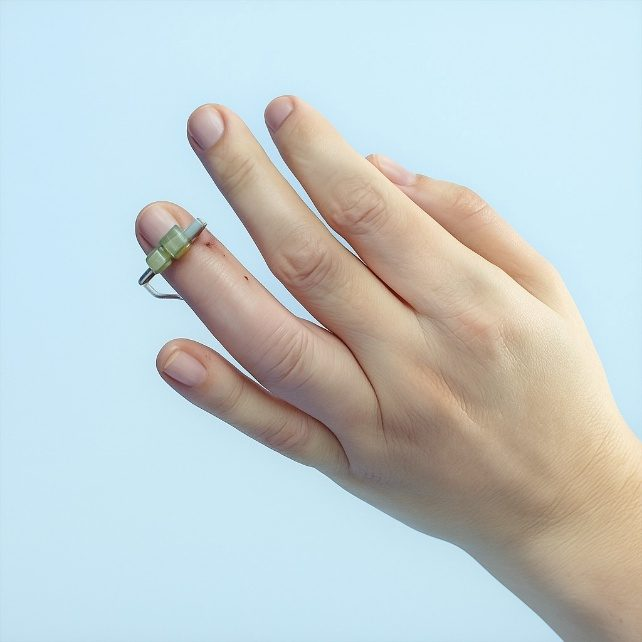

NC2019/0014675
PATENTEPATENTE – COMPOSTERAS
SISTEMA Y DISPOSITIVOS DE FIJACIÓN ÓSEA EXTERNA PARA FIJACIÓN DE FRACTURAS Y MÉTODOS RELACIONADOS
- Inventor
- Dallan Geller Hernández – Healthy Solutions S.A.S
- Sector
- Instrumentos
- Página Web
- Abrir enlace ↗
- Contacto
- 📞 3014854565